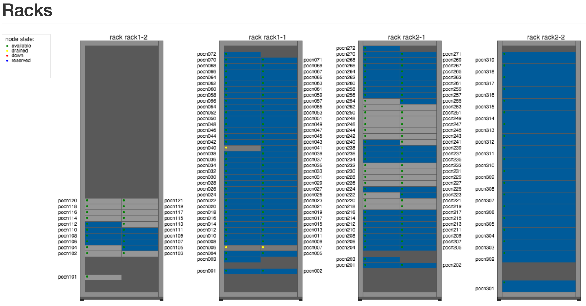
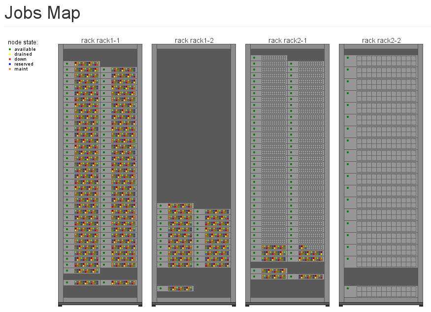

Installation Guide¶
Download¶
Source code¶
The source code of Slurm-web is hosted on GitHub at this URL: https://github.com/rackslab/slurm-web
You can download latest version of this source code by clone the Git repository:
git clone https://github.com/rackslab/slurm-web.git
Debian packages¶
We are currently thinking about providing pre-built Debian packages for Slurm-web ready to download and install. For the moment, you will have to build these packages by yourself from the source.
On a Debian based system with all build dependencies installed, run the following command (or any similar) to build the binary packages:
debuild -us -uc
The packages should build properly, then you can add them to your own internal Debian repository.
Requirements¶
For the moment, Slurm-web is developed as a native Debian package. This means it is very easy to install it and configure it on Debian based GNU/Linux distributions (eg. Ubuntu).
However, the drawback is that it becomes much harder to install it on others RPM based GNU/Linux distributions (such as RHEL, Centos, Fedora, and so on). If you want to improve the situation on these distributions, please contact us.
The backend API depends on the following libraries:
- Flask web framework,
- PySLURM, the python binding to Slurm C libraries,
- ClusterShell , a distributed shell with nodeset manipulation Python library
The dashboard has the following dependencies:
Installation¶
From source¶
Not supported yet. Please contact us if you want to improve this part.
Docker¶
To build Slurm-web as a Docker container, you will need to:
1. Clone the git repository¶
$ git clone https://github.com/rackslab/slurm-web.git
$ cd slurm-web
2. Build the image¶
$ cd docker/container
$ docker build -t slurm-web .
$ cd ../..
3. Customize the configuration files¶
The container will use configuration files stored in a conf/ directory (you can customize the path in the run.sh script). You can copy the provided run.sh script and examples in a location of your choice, and start from there:
$ WORKDIR=$HOME/slurm-web
$ mkdir $WORKDIR
$ cp docker/run/run.sh $WORKDIR/
$ cp -R conf/ $WORKDIR/
$ cd $WORKDIR
... edit configuration files ...
4. Run the container¶
You may want to edit the run.sh script to specify where you stored your configuration files.
$ cd $WORKDIR
$ ./run.sh
You can then check that the container is running with docker ps, and then access the Slurm-web interface by pointing your browser to http://localhost:8081/slurm.
Distributions¶
Debian/Ubuntu¶
Once the binary packages of Slurm-web are in your internal Debian repository, simply install these packages with the following command:
apt-get install slurm-web-restapi slurm-web-dashboard
RHEL/Centos¶
Not supported yet. Please contact us if you want to improve this part.
Configuration¶
The configuration of Slurm-web is composed of a few files, an XML description of your racks and nodes, a file for the REST API configuration, and some files for the dashboard configuration. The content and format of these files is explained in the following sub-sections.
XML racks and nodes description¶
Slurm does not provide sufficient information about the nodes and the racks composing a supercomputer for representing it accurately with correct node sizes and distribution over the racks. For this purpose, Slurm-web backend API relies on an additional file located under the path /etc/slurm-web/racks.xml.
This file must contain the complete description of your racks and nodes in XML format. Here is an example of file:
<?xml version="1.0" encoding="UTF-8"?>
<!DOCTYPE rackmap SYSTEM "/usr/share/slurm-web/restapi/schema/dtd/racks.dtd">
<rackmap>
<nodetypes>
<nodetype id="m32x4321" model="Vendor A 32 x4321" height="1" width="0.5" />
<nodetype id="b43" model="Vendor B 43" height="2" width="1" />
</nodetypes>
<racks posx="0" posy="0" width="10" depth="10">
<racksrow posx="0">
<rack id="rack1-1" posy="0">
<nodes>
<node id="cn001" type="m32x4321" posx="0" posy="2" />
<node id="cn002" type="m32x4321" posx="0.5" posy="2" />
<node id="cn003" type="m32x4321" posx="0" posy="4" />
<nodeset id="cn[004-072]" type="m32x4321" posy="5" />
</nodes>
</rack>
<rack id="rack1-2" posy="1">
<nodes>
<node id="cn101" type="m32x4321" posx="0" posy="1" />
<nodeset id="cn[102-121]" type="m32x4321" posy="5" />
</nodes>
</rack>
</racksrow>
<racksrow posx="1">
<rack id="rack2-1" posy="0">
<nodes>
<node id="cn201" type="m32x4321" posx="0" posy="3" />
<node id="cn202" type="m32x4321" posx="0.5" posy="3" />
<node id="cn203" type="m32x4321" posx="0" posy="4" />
<nodeset id="cn[204-272]" type="m32x4321" posy="6" />
</nodes>
</rack>
<rack id="rack2-2" posy="1">
<nodes>
<node id="cn301" type="b43" posx="0" posy="0" />
<nodeset id="cn[302-319]" type="b43" posy="5" />
</nodes>
</rack>
</racksrow>
</racks>
</rackmap>
The root element of the XML file is <rackmap>. This root element must contain 2 elements: <nodetypes> and <racks>.
The <nodetypes> element contains the description of all types of nodes with their models and sizes. Each type of node is described within a distinct <nodetype> element with a unique ID (ex: m32x4321). This ID will be later used as a reference of type for nodes. Each node type must have a model attribute whose content is free text, a height and a width whose values must be floats in U unit. For example, a node with a width of 0.5 uses half of rack width. With a height of 2, a node will uses 2 U in rack height.
The organization of the different racks is designed by rows of racks, in order to generate a 3D view of the room containing the racks composing the supercomputer.
The <racks> element contains the list of the rows of racks, corresponding to the <racksrow> elements. It has these attributes:
- a posx attribute and a posy attribute to set the position of the racks inside the room (the origin is corresponding to the center of the 3D view)
- a width attribute and a depth attribute to set the size of the room
- and finally a rackwidth attribute to set the width of a rack.
Each <racksrow> element has a posx attribute to define the position of the corresponding row of racks, starting from the left of the screen, and contains a list of racks, each one being described in a distinct <rack> element. Each attribute for either <racks> or <racksrow> or <rack> elements use the width of a rack as unit.
Each rack element must have a unique ID which will be then used as rack name. A rack must have a position in its <racksrow>, within posy attribute. These attributes about position must be integer, they represent the rack position within a grid with all racks. If posx and posy attributes are skipped, then we assume they are equal to 0. Two racks should not have the same positions.
See in the schema below the relation between the parameters and the corresponding representation of the racks in the 3D view. Parameters for <racks> element are shown in blue, those for <racksrow> or <rack> elements in red.

A rack contains a set of nodes within <nodes> element as shown in the previous example. As usual, posx and posy attributes are assumed to be equal to 0 if missing. Besides, <nodeset> elements can have an attribute draw which will tell in which direction Slurm-Web will draw the nodes in the rack (up or down). When missing, it is set to up.
Here is the rendering of the 2D view according to this example of racks.xml:
{kind=link}
Here is the rendering of the jobsmap view according to this example of racks.xml:
{kind=link}
Here is the rendering of the 3D view according to this example of racks.xml:

Once you have completely described all the racks and nodes composing your supercomputer, you can check the file format by validating it against the provided DTD file with the following command:
xmllint --valid --noout /etc/slurm-web/racks.xml
User running the REST API¶
By default, the user running the REST API is set to www-data in /etc/apache2/conf-available/slurm-web-restapi.conf. If some resources in your Slurm cluster are accessible to only some of your users, then Slurm-Web won’t show them. Using a user with enough credentials will fix the problem. Usually, setting the user to slurm (see slurm.conf) is enough.
REST API configuration¶
All the configuration of the REST API is handled in conf/restapi.conf. Here is an example of a valid configuration file:
# configure here all parameters for the Slurm-web REST API
[cors]
# give here the list of the domains from where the origin is authorized,
# separated by commas
#
# example : authorized_origins = http://example1.com,http://example2.com
authorized_origins = http://dashboard.myslurmhpc.com
[config]
# Set to 'enable' to activate authentication.
# Authentication is based on LDAP, so an LDAP server and the good configuration
# for it, below in this file, are required.
authentication = enable
# Absolute path to the secret key file.
secret_key = /etc/slurm-web/secret.key
# Set to 'enable' to activate cache.
cache = enable
# Path for racks description (default to /etc/slurm-web/racks.xml).
racksxml =
[roles]
# Allow guests users or not. Guests users have the 'none' role. Disabled by
# default.
guests = disabled
# The `all` role if for all users that do not either have the user or admin
# role, including guests. Enabled by default.
all = enabled
# The roles members can be defined with a list of groups (whose names
# are prefixed by @) and logins.
user = @usergroup,user
admin = @admingroup,adminuser
# Give here restricted fields about jobs for each role, separated by commas
restricted_fields_for_all = command,account
restricted_fields_for_user = command
restricted_fields_for_admin =
[acl]
# You can set here an access control list for each view of the dashboard for
# this cluster.
# This feature requires authentication to be enabled.
# For each view, you can give a list of roles to define who can access to this
# view.
# If no ACL is provided for a view, every authenticated user can access to
# this view.
# i.e. ``jobs = admin`` implies that the jobs view will be available only for
# every user which has role of 'admin'.
# If you give an empty value for an entry (i.e. ``jobs =``), the corresponding
# view will not be accessible for anybody.
#
# Available views are : [
# 'jobs', 'jobsmap', 'partitions', 'reservations', 'qos', 'racks', '3dview',
# 'gantt', 'topology'
# ]
jobs = user,admin
gantt = admin
[ldap]
# Configure here settings to connect to your LDAP server.
uri = ldap://admin:389
people_base = ou=people,dc=cluster,dc=local
group_base = ou=group,dc=cluster,dc=local
#cacert = /etc/ssl/certs/cacert.pem
expiration = 1296000
[racks]
# path for racks description (default to /etc/slurm-web/racks.xml)
path = /etc/slurm-web/racks.xml
[cache]
# address for Redis server (default to host=localhost, port=6379)
redis_host = localhost
redis_port = 6379
# TTL for jobs (default to 10 seconds)
jobs_expiration = 10
# TTL for other informations (default to 86400 seconds = 24 hours)
global_expiration = 86400
CORS¶
To allow a Slurm-web dashboard to retrieve informations from a Slurm cluster on a different server than the one where the dashboard is, you can configure the domain where your dashboard is hosted. The REST API is even able to be polled from several crossdomain dashboards: just set origins of each dashboard in the authorized_origins parameter, separated by commas.
Authentication¶
The REST API has an optional authentication feature based on an LDAP directory. If the parameter authentication is set to enable, the dashboard will ask users to give credentials to access the cluster data.
The authentication feature requires a randomly generated secret key file. The content of this file is used to sign the generated tokens on server-side to ensure their integrity during network exchanges. The path to the secret key file is set with the secret_key parameter in the config section. The default path is /etc/slurm-web/secret.key. For security reason, please make sure only the root and WSGI users have read access to this file and it is not world-readable.
To generate a secret key file, you can use Linux pseudorandom number generator with this command:
head -c 64 /dev/urandom > /etc/slurm-web/secret.key
Then set correct mode and ownerships:
chown www-data: /etc/slurm-web/secret.key
chmod 400 /etc/slurm-web/secret.key
The authentication feature also requires the LDAP parameters to be set in the [ldap] section of the configuration files.
When enabled, the authentication feature handles different roles for the users:
- user: this role is for users. The parameter user accepts a list of values to define authorized users either by the group he belongs to, or by their login.
- admin: this role is for administrators. The parameter admin works as the user one.
- all: this role for all other users who are neither user or admin. When the parameter all is set to enabled (default), all authenticated users can access the REST API. When it is set to disabled, the users without any other role cannot access the REST API.
For each role, a corresponding restricted field parameter exists to set some fields about jobs which have to be hidden to the defined users. Just set a list of the field’s name separated by commas.
It is also possible to allow guests users to access the REST API with the guests paramter (disabled by default). If set to enabled, a new guest button is added under the login form in the dashboard. The guests users have the all role. Then the all role must be enabled as well to allow the guests users to access the REST API.
Besides the restriction of fields, it is also possible to add restrictions on jobs or reservations according to one’s roles. This restriction can be set by Private Data from Slurm. If jobs or reservations are defined previously in Slurm, non-admin users will not see nobody but their own jobs or reservations. The Jobs View or Reservations View will be empty if logging as guests.
Cache¶
The cache mechanism is used to prevent overloading of slurmctld. It requires the python-redis package and a running instance of Redis. It is disabled if python-redis is not available. You can set two different TTL : one for informations about jobs, the second one for all other informations retrieved on slurmctld.
Dashboard configuration settings¶
All configuration files for dashboard are in the directory conf/dashboard.
App conf/dashboard/config.json¶
Used for general purpose.
Basic configuration file :
{
"STARTPAGE": "jobs",
"REFRESH": 30000,
"MAXNODESLENGTH": 25,
"AUTOLOGIN": false,
"LOGOURL": "../static/logo.png"
}
STARTPAGE (String) : Name of the page loaded at the application startup.
- Default pages available :
- 3d-view
- gantt
- jobs
- jobs-maps
- partitions
- qos
- racks
- reservations
- topology
REFRESH (Number) : Time in milliseconds between two api call, used for module refresh.
REFRESHCHECKBOX (Boolean) : Allow to show/hide the refresh control checkbox. Hide if undefined.
MAXNODESLENGTH (Number) : Maximum characters show for the nodes name in “Nodes” column in module Jobs.
AUTOLOGIN (Boolean) : Enable/disable automatic login on all clusters (optionnal: disabled if omitted).
LOGOURL (String) : Define the image url in the top left-hand corner.
PWDTYPE (String) : The type of password can be specified here if necessary.
JOBS_XTRA_COL (Hash) : Define an additional optional column if the jobs view. This parameter is optional. When set, it must contain the following 3 parameters:
- NAME: The column name
- CONTENT: The HTML content of the cell for each job.
- CONDITION: The job state (eg. RUNNING) for which the content of the cell is displayed. The cell for jobs in other states in remains empty. There is a special value ALL for the cell content to be displayed for all jobs.
The content can have special placeholders which are substituted based on the context:
- {{cluster}}: the cluster name
- {{jobId}}: the slurm job ID
Here is a full example of a JOBS_XTRA_COL:
"JOBS_XTRA_COL":
{
"NAME": "metrics",
"CONTENT": "<a target=\"_blank\" href=\"http://metrics.company.tld/{{cluster}}/{{jobId}}\">view</a>",
"CONDITION": "RUNNING"
}
This example configures a column whose name is metrics. A link named view appears for all running jobs. This link redirects to an HTTP URL on metrics.company.tld containing the cluster name and the job ID.
2D Draw conf/dashboard/2d.config.json¶
2D draw configuration, used in module racks and jobsmap.
Basic configuration file :
{
"LEFTMARGIN": 60,
"TOPMARGIN": 15,
"RACKBORDERWIDTH": 10,
"RACKUNITNUMBER": 42,
"RACKUNITHEIGHT": 12,
"RACKFONTFAMILY": "sans-serif",
"RACKFONTSIZE": 14,
"FLOORWIDTH": 5,
"FOOTWIDTH": 7,
"FOOTHEIGHT": 3,
"RACKINSIDEWIDTH": 150,
"CANVASMARGINTOP": 30,
"NODESPERRACK": 72,
"NODESPERROW": 2,
"NODEMARGIN": 1,
"NODEHORIZONTALPADDING": 3,
"NODEVERTICALPADDING": 1,
"NODELEDRADIUS": 2,
"NODELEDPADDING": 2,
"NODEFONTFAMILY": "sans-serif",
"NODEFONTSIZE": 10,
"NODENAMEVERTICALOFFSET": 1,
"NODENAMEHORIZONTALOFFSET": 0,
"LEGEND": {
"WIDTH": 100,
"HEIGHT": 100
}
}
- LEFTMARGIN (Number) : Rack margin left in pixel
- TOPMARGIN (Number) : Rack margin top in pixel
- RACKBORDERWIDTH (Number) : Rack border/closure size in pixel
- RACKUNITNUMBER (Number) : Number of unit in one rack
- RACKUNITHEIGHT (Number) : Height of one rack unit in pixel
- RACKFONTFAMILY (String) : Rack name font family
- RACKFONTSIZE (Number): Rack name font size
- FLOORWIDTH (Number) : Width of the floor element drawn at rack bottom, in pixel
- FOOTWIDTH (Number) : Rack foot width in pixel
- FOOTHEIGHT (Number) : Rack foot height in pixel
- RACKINSIDEWIDTH (Number) : Size
- CANVASMARGINTOP (Number) : Canvas internal margin top in pixel.
- NODESPERRACK (Number) : Number of nodes in one rack
- NODESPERROW (Number) : Number of nodes in one row
- NODESMARGIN (Number) : Space between two nodes in pixel
- NODEHORIZONTALPADDING (Number) : Horizontal padding on node
- NODEVERTICALPADDING (Number) : Vertical padding on node
- NODELEDRADIUS (Number) : Radius of the LED on node
- NODELEDPADDING (Number) : Padding on the LED on node
- NODEFONTFAMILY (String) : Node name font family
- NODEFONTSIZE (Number) : Node name font size
- NODENAMEVERTICALOFFSET (Number) : The vertical offset starting from the middle where the node name is labelled in rack view, in pixel
- NODENAMEHORIZONTALOFFSET (Number) : The horizontal offset starting from the center where the node name is labelled in rack view, in pixel
- LEGEND (Object) : Legend property
- WIDTH (Number) : Legend canvas width in pixel
- HEIGHT (Number) : Legend canvas height in pixel
2D Colors conf/dashboard/2d.colors.config.json¶
2D colors used in module racks and jobsmap.
Basic configuration file :
{
"COREBORDER": "rgba(100,100,100,1)",
"LED": {
"IDLE": "rgba(150,150,150,1)",
"FULLYALLOCATED": "rgba(0,91,154,1)",
"PARTALLOCATED": "rgba(86,128,184,1)",
"UNAVAILABLE": "rgba(150,150,150,0.5)",
"UNKNOWN": "rgba(39,39,39,1)",
"AVAILABLE": "green",
"DRAINED": "yellow",
"DOWN": "red",
"RESERVED": "blue"
},
"JOB": [
"rgba(237,212,0,1)",
"rgba(245,121,0,1)",
"rgba(193,125,17,1)",
"rgba(115,210,22,1)",
"rgba(52,101,164,1)",
"rgba(117,80,123,1)",
"rgba(204,0,0,1)",
"rgba(196,160,0,1)",
"rgba(206,92,0,1)",
"rgba(143,89,2,1)",
"rgba(78,154,6,1)",
"rgba(32,74,135,1)",
"rgba(92,53,102,1)",
"rgba(164,0,0,1)"
]
}
- COREBORDER (rgba()) : Core grid color.
- LED (Object) : Colors of the led status, based on the node state
- IDLE (rgba()) : Node state is idle
- FULLYALLOCATED (rgba()) : Node state is reserved, allocated or completing and all cpus allocated
- PARTALLOCATED (rgba()) : Node state is reserved, allocated or completing and not all cpus allocated
- UNAVAILABLE (rgba()) : Node state is down
- UNKNOWN (rgba()) : Node state is down
- AVAILABLE (rgba()) : Node state is idle
- DRAINED (rgba()) : Node state is draining or drained
- DOWN (rgba()) : Node state is down
- RESERVED (rgba()) : Node state is reserved
- JOB (Array) : Colors used for a job core, the colors is selected like this : JobColorsArray[JobId % JobColorsArray.length]
3D Draw conf/dashboard/3d.config.json¶
3D draw configuration, used in module 3D view.
Basic configuration file :
{
"UNITSIZE": 8.0,
"UNITSIZEMETER": 4.0,
"WALLHEIGHT": 5.0,
"PATHSIZE": 3,
"MOVESPEED": 10.0,
"LOOKSPEED": 0.1,
"RACKWIDTH": 1,
"RACKHEIGHT": 0.1,
"RACKDEPTH": 1,
"RACKMARGIN": 0.5,
"RACKPADDING": 0.06,
"NODEPADDINGLEFTRIGHT": 0.01,
"NODEPADDINGTOP": 0.1,
"LEDDIMENSIONS": 0.025,
"LEDDEPTH": 0.001,
"CPUPADDING": 0.3,
"CPUDEPTH": 0.001,
"DEBUG": false,
"RACKNAME": {
"SIZE": 0.2,
"DEPTH": 0.001,
"FONT": {
"NAME": "DejaVu Sans Mono",
"PATH": "js/fonts/DejaVu_Sans_Mono_Book.js"
}
},
"CONTROLS": {
"FORWARD": 90,
"BACKWARD": 83,
"LEFT": 81,
"RIGHT": 68,
"FREEZE": 32
},
"PACMAN": {
"MOVESPEED": 16,
"LOOKSPEED": 4
}
}
- UNITSIZE (Number) : 3D environment unit
- UNITSIZEMETER (Number) : Ratio between metric unit and 3D environment unit, used only in the room dimensions
- WALLHEIGHT (Number) : Room wall height in UNITSIZE
- PATHSIZE (Number) : Number of path between two racks range (One path is equal to UNITSIZE)
- MOVESPEED (Number) : X, Y, Z camera translation speed in UNITSIZE
- LOOKSPEED (Number) : X, Y, Z camera rotation speed in UNITSIZE
- RACKWIDTH (Number) : Rack width in UNITSIZE (axe: x)
- RACKHEIGHT (Number): Rack height in UNITSIZE (axe: y)
- RACKDEPTH (Number) : Rack depth in UNITSIZE (axe: z)
- RACKMARGIN (Number) : Space between two racks in UNITSIZE
- RACKPADDING (Number) : Space inside one rack in UNITSIZE
- NODEPADDINGLEFTRIGHT (Number) : Left and right space inside one node, proportionnal to the node width in UNITSIZE
- NODEPADDINGTOP (Number) : Top space inside one node, proportionnal to the node width in UNITSIZE
- LEDDIMENSIONS (Number) : Width and height of the node led, proportional to the node parent element in UNITSIZE
- LEDDEPTH (Number) : Depth of the node led, proportional to the node parent element in UNITSIZE
- CPUPADDING (Number) : Space around one cpu, proportional to the node parent element in UNITSIZE
- CPUDEPTH (Number): Depth of cpus, proportional to the node parent element in UNITSIZE
- DEBUG (Boolean) : Show the x (red), y (green), z (blue) axes for debug.
- RACKNAME (Object) :
- SIZE (Number) : Font height for the rack name banner in UNITSIZE (axe: y)
- DEPTH (Number) : Font depth for the rack name banner in UNITSIZE (axe: z)
- FONT (Object) :
- NAME (String) : Font name
- PATH (String) : Path of the font file converted in Javascript format for Typeface.JS. [Typeface converter](https://github.com/derniercri/font4three)
- CONTROLS (Object) : Keyboard binding for fps and orbital camera controls. [Keycodes list] (http://www.javascripter.net/faq/keycodes.htm)
- FORWARD (Keycode) : Move forward
- BACKWARD (Keycode) : Move backward
- LEFT (Keycode) : Move left
- RIGHT (Keycode) : Move righ
- FREEZE (Keycode) : Stop/Start movement
- PACMAN (Object) : Specific pacman mode configuration
- MOVESPEED (Number) : X, Y, Z camera translation speed in UNITSIZE
- LOOKSPEED (Number) : X, Y, Z camera rotation speed in UNITSIZE
- COLLISONMARGIN (Number) : Space before object collision with camera in UNITSIZE, used for FPS controls
3D Colors 3d.colors.config.json¶
3D colors used in module 3d view.
Basic configuration file :
{
"RACK": "rgb(89, 89, 89)",
"NODE": "rgb(49, 49, 49)",
"LED": {
"IDLE": "rgb(150, 150, 150)",
"FULLYALLOCATED": "rgb(0, 91, 154)",
"PARTALLOCATED": "rgb(86, 128, 184)",
"UNAVAILABLE": "rgb(150, 150, 150)",
"UNKNOWN": "rgb(39, 39, 39)",
"AVAILABLE": "rgb(0, 255, 0)",
"DRAINED": "rgb(255, 255, 0)",
"DOWN": "rgb(255, 0, 0)",
"RESERVED": "rgb(0, 0, 255)",
"NOTVISIBLE": "rgb(0, 0, 0)"
},
"JOB": [
"rgb(237, 212, 0)",
"rgb(245, 121, 0)",
"rgb(193, 125, 17)",
"rgb(115, 210, 22)",
"rgb(52, 101, 164)",
"rgb(117, 80, 123)",
"rgb(204, 0, 0)",
"rgb(196, 160, 0)",
"rgb(206, 92, 0)",
"rgb(143, 89, 2)",
"rgb(78, 154, 6)",
"rgb(32, 74, 135)",
"rgb(92, 53, 102)",
"rgb(164, 0, 0)"
],
"NOJOB": "rgb(74, 74, 74)"
}
- RACK (rgb()): Rack color
- NODE (rgb()): Node color
- LED (Object): Colors of the led status, based on the node state
- IDLE (rgb()) : Node state is idle
- FULLYALLOCATED (rgb()) : Node state is reserved, allocated or completing and all cpus allocated
- PARTALLOCATED (rgb()) : Node state is reserved, allocated or completing and not all cpus allocated
- UNAVAILABLE (rgb()) : Node state is down
- UNKNOWN (rgb()) : Node state is down
- AVAILABLE (rgb()) : Node state is idle
- DRAINED (rgb()) : Node state is draining or drained
- DOWN (rgb()) : Node state is down
- RESERVED (rgb()) : Node state is reserved
- NOTVISIBLE: Default color for empty core
- JOB (Array) : Colors used for a job core, the colors is selected like this : JobColorsArray[JobId % JobColorsArray.length]
- NOJOB (rgb()): Default color for empty core
- RACKNAME (Object):
- FONT (rgb()): Font color for the rack name banner
Clusters clusters.config.json¶
The Slurm-web Dashboard can retrieve informations from several REST APIs hosted on different servers. Simply set the address of each one to reach them, like in the example below :
[
{
"name": "My first cluster",
"api": {
"url": "http://myfirstrestapi.myslurmhpc.com",
"path": "/slurm-restapi"
}
},
{
"name": "My second cluster",
"api": {
"url": "http://mysecondrestapi.myslurmhpc.com",
"path": "/"
}
}
]
The path attribute defines the route to the REST API on the server (by default the REST API is configured to be reached on the route /slurm-restapi ).
If you have only one cluster hosted on the same server than the dashboard, use an empty array :
[]